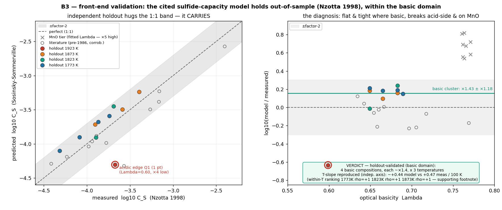
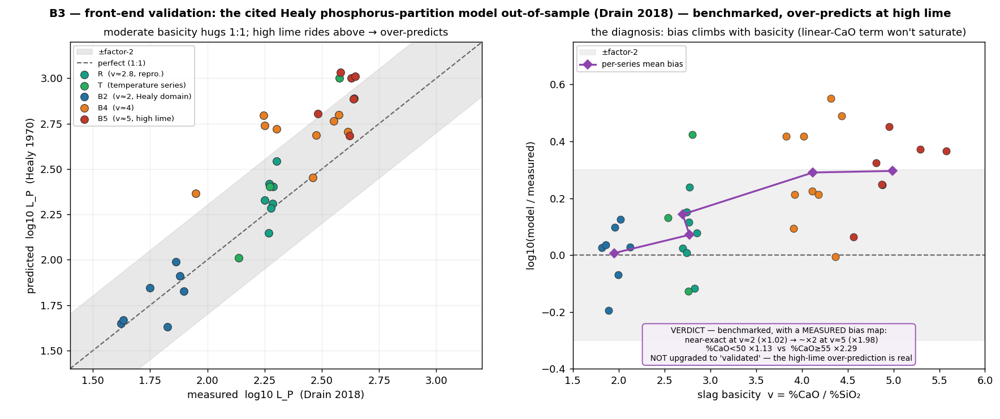
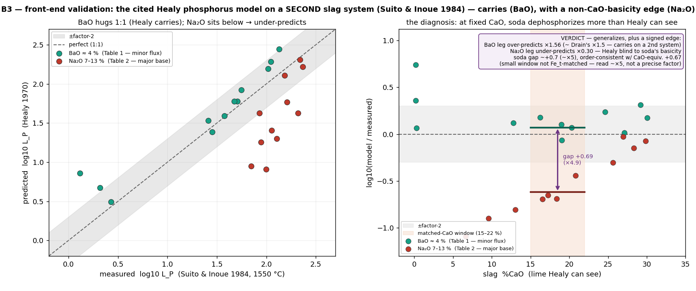
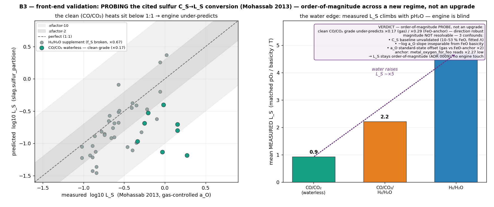
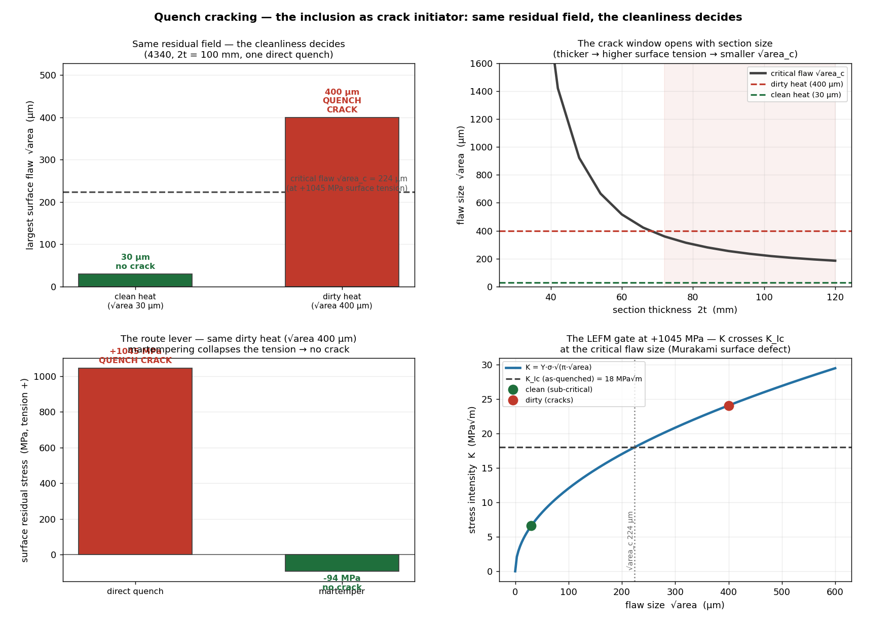
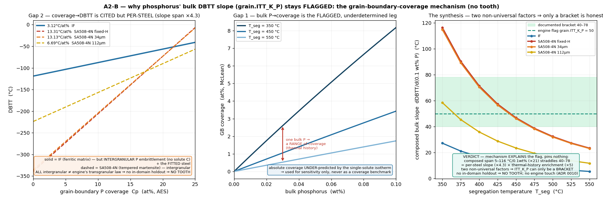
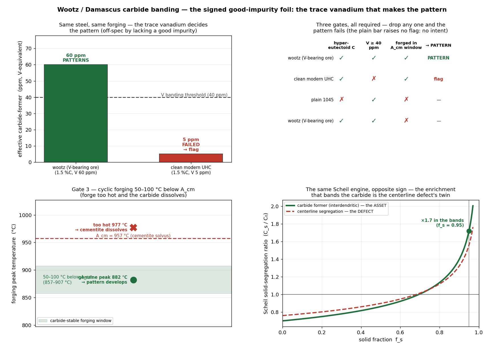
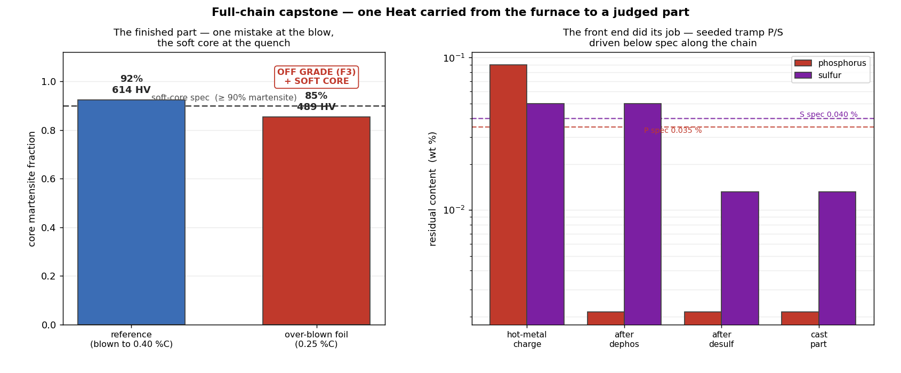
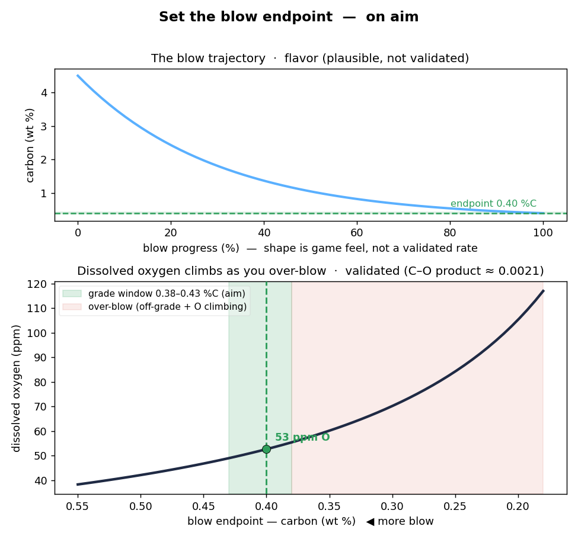
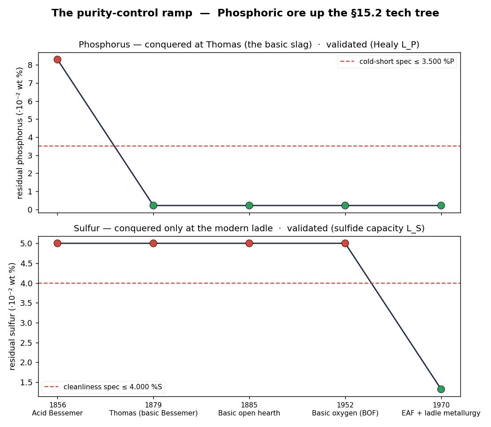

Four fates of one steel
One 1080 steel, four quench rates → pearlite → bainite → martensite — the C-curve mechanism beside the microstructure it produces.
python -m steel.demo_four_curves
Composition + cooling in, microstructure and properties out. Click any card to open its figure full-size, or copy its run command. Every surface of the simulator — visualizations, demos, experiments, and the notebook — in one place.
Each card runs one python -m steel.<name> demo, prints its validation table, and banks the figure shown. Needs only .[viz].
The composition × cooling sweep below, the back-end interactive what-if app (streamlit run steel/app.py) — pick a grade, quench, and section size and watch the microstructure move — its front-end ore→billet twin (streamlit run steel/app_making.py), and the defect-consequences app (streamlit run steel/app_consequences.py).
Two narrative teaching paths with sliders. New here? Open the back-end notebook (cooling curve → microstructure), read "Start here — the 30-second mental model", then go top to bottom — or its front-end making notebook (ore → billet → and what goes wrong).
Suggested first pass: demo_four_curves → demo_jominy → demo_sweep → demo_tempered_jominy, then branch by interest. Install & launch commands are in the README; the physics and validation behind each demo are in steel/README.md.
No demo matches that filter — try a shorter term (titles, blurbs, module names, and topics are all searched).
One 1080 steel, four quench rates → pearlite → bainite → martensite — the C-curve mechanism beside the microstructure it produces.
python -m steel.demo_four_curves

Every composition against every cooling rate, side by side — the hardenability axis the four-curves view can't show. This is the experimentation surface; the app makes it interactive.
python -m steel.demo_sweep

One end-quench bar: shallow-hardening 1045 against deep-hardening 4140, hardness versus depth from the quenched end.
python -m steel.demo_jominy

Critical diameter read from the model against measured H-band data — does it rank the steels' hardenability in the right order?
python -m steel.demo_ideal_diameter

A tempered Jominy traverse — per-constituent temper of a mixed structure, not a single hardness knocked down by one number.
python -m steel.demo_tempered_jominy

Grain refinement — the lone lever that raises strength and toughness at once (same Hall–Petch form, opposite grain-size signs).
python -m steel.demo_grain

Those two grains drawn to scale — a size-accurate microstructure swatch beside the schematic.
python -m steel.demo_grain_morphology

Quench past the nose, hold isothermally inside the diagram, grow bainite — the atlas-anchored isothermal hold.
python -m steel.demo_austemper

The same hardness as a direct quench, far less distortion — the surface−centre temperature gap closed before the martensite forms.
python -m steel.demo_martemper

The bainite bay opened in continuous cooling — three competing reactions (ferrite / pearlite / bainite) raced on one shared austenite pool.
python -m steel.demo_unified_kv


Does any cited composition factor predict bainite kinetics across steels? Eight atlas steels say no — the per-steel-only wall, measured and quantified (not just asserted), and the alloy-vs-carbon diagnosis behind it.
python -m steel.demo_cct_validation

Does the cited optical-basicity C_S model predict sulfur affinity out-of-sample? An independent measured dataset (Nzotta 1998, post-dating the 1986 fit, MnO/FeO-free) says yes for basic slags — ~×1.4 with tight scatter and perfect ranking — and names the acidic and MnO edges where it doesn't.
python -m steel.demo_slag_validation

Does the cited Healy phosphorus-partition (L_P) model predict dephosphorization out-of-sample? An independent measured dataset (Drain 2018, 48 years after the 1970 fit) says it carries at moderate basicity but over-predicts ~×2 at high lime — the vague 'over-predicts at high lime' caveat turned into a quantified, benchmarked bias map.
python -m steel.demo_slag_lp_validation

Does that L_P bias map hold on a different slag system, at the same converter temperature? A second independent set (Suito & Inoue 1984, Na₂O/BaO fluxes) says yes with an edge: on BaO slags Healy carries ~×1.5 — reproducing Drain from another lab — but on soda slags it under-predicts ~×4–5 at matched lime, because it reads only %CaO and is blind to Na₂O's basicity.
python -m steel.demo_slag_lp2_validation

C_S was validated, L_P benchmarked — but does the sulfur metal-partition L_S the ladle step actually computes carry? Against gas-controlled heats (Mohassab 2013, oxygen fixed by the gas — the only clean way to test the −log a_O term) it's order-of-magnitude, not an upgrade: the clean subset under-predicts, and three confounds (FeO-laden C_S baseline, the a_O slope inseparable from FeO basicity, an a_O standard-state offset) mean the magnitude can't be pinned. Two edges survive — water raises L_S ~×5 (engine blind), and the FeO oxygen anchor reads ~×2 low.
python -m steel.demo_slag_ls_validation

The residual stress and distortion a quench locks into a section — the solid-mechanics axis (incremental elastic–perfectly-plastic, transform dilatation and all).
python -m steel.demo_residual

Couples the residual-stress field to a representative surface-flaw size through a fracture-mechanics gate: in the same tensile surface, a clean heat survives while a dirty one quench-cracks — cleanliness decides, not just the stress.
python -m steel.demo_fracture

A carburized gear tooth: carbon diffused in at the surface, case hardness profiled out — the same sealed engine as Jominy, a mass-diffusion face. Now inverts closed-form too: target a case depth, get the cycle (time or temperature).
python -m steel.demo_carburize

Run the simulator backwards: name a target hardness, get a feasible recipe — grade, quench medium, and temper. v2 also inverts for a target yield (the normalized, slow-cool regime) and a target case depth.
python -m steel.demo_design


The front end begins: which reductant pulls the oxygen off which oxide, above which temperature. The carbon→CO line dives under the iron-oxide lines at ~750 °C — where ironmaking begins — and the oxygen-potential ladder shows why Al and Ca deoxidize a steel bath that Fe, Mn, Si cannot.
python -m steel.demo_reduction

The spine that lets steps compose: a Heat record threads through the back end, and an upstream alloy mistake (under-dosed Cr/Mo) propagates into a downstream defect — the same oil quench that through-hardens a proper 4140 leaves a soft, ferrite-dominant core, flagged on the Heat. Not a scripted failure — the back-end martensite fraction crossing a spec line.
python -m steel.demo_heat_state

The middle of the chain: blow carbon-saturated hot metal to the grade's carbon, kill it with aluminium, vacuum-degas. The blow's carbon is the one output the validated back end consumes — over-blow and the same quench leaves a soft core (a real refining mistake, a real downstream consequence). Alongside, the dissolved O / H / N and inclusion fields the Heat carried empty are filled: the deoxidation curve with its minimum, the C–O coupling, and Sieverts √p degassing.
python -m steel.demo_refining

The second half of refining: the two tramp impurities the blast furnace leaves in, partitioned into slag. The headline is the opposite oxygen dependence — dephosphorization wants the oxidizing converter (L_P rises with slag FeO), desulfurization wants the reducing ladle (L_S falls with dissolved oxygen) — two independently sourced correlations whose opposite signs dictate the process order. It reproduces the purity-control history: acid Bessemer can't dephosphorize (rails crack), Thomas' basic lining can, and sulfur only comes out once the heat is killed. P/S are carried but inert in the back end — the chemistry is benchmarked, the embrittlement consequence deferred.
python -m steel.demo_slag

What the tramp impurities finally DO. The same high-phosphorus, sulfurous pig iron, made into cracking steel by the acid Bessemer process and into sound steel by the basic process + Mushet's manganese + ladle desulfurization. Phosphorus threads the existing Pickering DBTT law (it strengthens AND embrittles — the signed foil) so the off-spec heat is brittle in the hand; free sulfur forms a Fe–FeS grain-boundary film above the 988 °C eutectic so it tears when forged (Mushet's manganese ties it as benign MnS). Together they bracket the workable temperature window — the consequence F2's slag partition set as state, now closed: phosphorus by propagation through the toughness law, sulfur through a new hot-working verdict.
python -m steel.demo_impurity_window

Phosphorus' OTHER consequence — the quench-and-tempered (martensitic) path, completing its coverage (cold-short was the ferritic one). A dirty Ni-Cr forging with residual phosphorus and no molybdenum, slow-cooled through ~375–575 °C, segregates phosphorus to the prior-austenite grain boundaries and fractures intergranularly. Four independent cures: a fast cool through the window, molybdenum (the classic remedy for susceptible Ni-Cr forgings), a clean heat, or a reheat above 600 °C (the reversibility that names it). The Watanabe J-factor ranks susceptibility — in the registry only the dirty Ni-Cr victim clears the threshold; 4140/8620 are safe by low J, not their sub-threshold Mo. No strict tooth — the segregation-C-curve-nose gate was run on paper and could not be pinned (a tractable model is ~100× too fast and underdetermined; the faithful nose needs Fe₃P-cluster kinetics, out of scope), so the model was not built to manufacture one.
python -m steel.demo_temper_embrittlement

Phosphorus' bulk contribution to the ductile-brittle transition (grain.ITT_K_P) has always been a flagged bracket (~40–78 °C per 0.1 wt% P), never a teeth-bearing coefficient — and this shows why, mechanistically. The clean measured form is grain-boundary coverage → DBTT, separated from the bulk-wt% term by two non-universal gaps: bulk P → coverage (a McLean isotherm that depends on thermal history — underdetermined) and coverage → DBTT (measured but per-steel: 3.12 °C/at% in ferritic IF steel up to 13.31 in tempered-martensite SA508-4N, a 4.3× cross-domain span). Composed, the bulk slope becomes a product of two non-universal factors whose ~20× range contains the 40–78 bracket with the engine's flagged 50 mid-range: the mechanism explains the bracket's width but pins nothing. No independent in-domain holdout exists, so — like the temper-embrittlement gate — there is no claimable tooth and no engine touch (ADR 0010).
python -m steel.demo_p_segregation_dbtt

Reversible temper embrittlement has a sibling on the SAME tempering axis — and the two are opposites. Temper as-quenched martensite in 260–370 °C and cementite precipitates as films along the interlath / grain boundaries (fed by retained-austenite decomposition); toughness drops into a trough. It is carbon-driven, not impurity-driven — so a clean medium-carbon steel still embrittles, where the reversible one needs phosphorus — and it is ONE-WAY: temper above ~400 °C and it recovers, but re-entering the trough cannot restore the film (the carbide morphology is set by the peak temper). Two gates, on the same frozen quench the spine uses: 4140 embrittles, 8620 (0.20 %C) is immune even fully hardened, and a section that did not harden has no tempered martensite to embrittle. No strict tooth — the trough-from-carbide-kinetics gate was run on paper and failed (the repo carries no stage-III carbide thermodynamics), so no carbide model was built to manufacture one; the trough window and the ~400 °C recovery are cited, the carbon gate and verdict rule by-construction.
python -m steel.demo_tempered_martensite_embrittlement

What dissolved hydrogen finally does — and why it is a geometric consequence, not a number. Refining fills the ladle hydrogen and flags the chemistry-state risk; whether a part flakes (internal hairline cracks) is set by whether the hydrogen can diffuse out before the section cools into the brittle range. Same 4140 heat at ~3.6 ppm, two sections, same dehydrogenation bake: the thin section degasses and is sound, the thick one traps it and flakes — and a long enough bake saves the thick one (the time scales as section²). Two-tier, like cold-short/red-short: refining sets the risk, this the consequence. Closed-form slab desorption (Crank) — no engine, no ADR. One genuine tooth: the bake time from an independently-pinned lattice D_H reproduces cited practice without tuning — a 500 mm forging → ~10 days (heavy forgings → days, the load-bearing anchor; the 1 h/inch thin-section rule is OoM sanity only) — OoM-grade; the L² scaling and verdict are by-construction.
python -m steel.demo_hydrogen_flaking

What dissolved oxygen finally does — and why it is a carbon-aware consequence, not a single number. Refining flags a carbon-blind risk (O > 30 ppm); whether a casting blows CO holes is set by the carbon the oxygen reacts with: gas evolves where [%C]·[%O] crosses the same CO equilibrium the converter runs on. Same light kill, two carbons, both within the 30 ppm spec: the high-carbon 1080 sits right on the CO line (limit ~25 ppm) and blows holes — carrying less oxygen than the sound low-carbon 8620 (limit ~100 ppm). A full kill saves it (the deox lever). Two-tier, like cold-short/red-short/flaking: refining sets the risk, this the consequence — and the two disagree because of carbon. No engine, no ADR, and honestly no claimable tooth (the criterion is the cited C–O equilibrium against held composition); the soft OoM note is 'high-C must be killed, low-C can be rimmed' from O_crit ∝ 1/C, no tuning. The solidification CO-margin is a conservative secondary (Scheil over-predicts carbon), not the verdict.
python -m steel.demo_gas_porosity

What residual sulfur does at the casting stage — the segregation-amplified sibling of forging-stage red-shortness. Slag flags a flat, Mn-blind risk (S > 0.040 %); whether a casting grows a Fe–FeS interdendritic film and hot-tears is set by the Mn:S in the last liquid to freeze, which is Scheil-enriched — sulfur piles up ~10× faster than manganese, so the film Mn:S is ~10× poorer than the bath. Two heats, same sulfur (both within spec, both clearing bulk MnS stoichiometry): the lower-Mn one (Mn:S 10) tears because its film falls to ~1.2, the higher-Mn one (Mn:S 22) stays sound — the Mushet lever again, only the threshold is in the tens. Distinct from red-short by phase + time (interdendritic liquid during freezing vs bulk solid at the forge — castability ≠ forgeability), not duplicated. No engine, no ADR, and no claimable tooth (the verdict is cited Scheil partition feeding cited MnS stoichiometry); the soft OoM note is that segregation amplifies the stoichiometric 1.71 into the tens — reproducing the empirical 'castings need Mn:S ≳ 20' rule (Toledo 1993) with no tuning, order-robust but cutoff-tuned. The RDG/feeding driver and the carbon-peritectic contribution are named deferrals.
python -m steel.demo_hot_tear

The same manganese sulfide is signed: a deliberate free-machining asset (the reason the resulfurized 11xx grades exist — MnS breaks the chip) and an unintended through-thickness toughness liability (hot working elongates the plastic MnS into stringers that gut the short-transverse direction). Slag raises one flat, shape-blind high-sulfur risk (S > 0.040 %) that fires on every free-machining grade by design; this splits it into its good and bad halves. The hero: one resulfurized 1144-type heat read two ways — as-rolled it is free-machining and anisotropic; a calcium treatment globularizes the MnS and it is free-machining and isotropic, the same sulfur, the same MnS volume — only the shape changed (the lever is the shape, not the sulfur, which is why the anisotropy flag is gated on morphology, never an S-threshold). A plain low-S heat is tough but cannot free-machine — the other end of the trade. The worked-product sibling of forging-stage red-shortness (it reads the tied MnS, where red-short reads the free sulfur). No engine, no ADR, and no claimable tooth: the MnS amount is cited stoichiometry, its volume a cited density ratio, the two verdicts by-construction; 'one MnS, two opposite signs' is the pedagogical point, by construction. The machinability index is the MnS contribution only (hardness/carbon and Pb/Ca/Te confound the real rating); the transverse debit is its own directional axis (not the hardness toughness proxy or DBTT). Stringer aspect ratio (∝ rolling reduction) is a named ceiling.
python -m steel.demo_sulfide_morphology

The mirror image of every other impurity story: the watered Damascus pattern needs a trace carbide-forming "impurity" — chiefly vanadium — that a modern clean-steel spec would reject as off-spec pickup, yet the wootz smith requires. So "bad steel" and "good steel" are the same statement, signed either way — the one genuine front-end physics gap (steel-making.md §14.5 / §15.4), now filled. The carbide banding develops only through three gates, all required (Verhoeven & Pendray 1998): hypereutectoid carbon (~1.5 %, so a proeutectoid Fe₃C network exists to band — fe_c lever rule); a trace former above threshold (V ≥ 40 ppm, or the weaker Mn ≥ 200 ppm); and cyclic forging 50–100 °C below A_cm (the cementite solvus — forge hotter and it dissolves). The hero: the same 1.5 %C steel forged the same way — the V-bearing cake waters into Damascus; the clean modern twin, forged identically, comes out plain and raises wootz-pattern-failed ("the smith did everything right; the ore lacked the vanadium"). A plain bar never forged as wootz raises no flag — the flag is gated on intent. The reuse beat: the interdendritic former enrichment that aligns the bands is the same Scheil solid-segregation ratio (casting.segregation_ratio) that makes centerline segregation a hardenability defect — one engine, two signs (γ coefficients, since hypereutectoid wootz solidifies as primary austenite). No engine, no ADR, and no claimable tooth: the three gates are cited threshold lines, the cementite is fe_c's lever rule, the enrichment is casting's Scheil. The band spacing (30–70 µm) is a cited observation (it traces the interdendritic spacing), not computed — that would be a manufactured coherence (cake modulus, Chvorinov B, and the SDAS law are all soft knobs aimed at a 2×-wide target). The enrichment ratio is representative (the pinned Mo former as the exemplar). The verdict is yes/no, not a rendered etch — a named ceiling.
python -m steel.demo_wootz

The seam to the back end: trim an alloy-lean tap up to a grade by ferroalloy additions, sized for an assumed recovery. A bath that under-delivers (Cr/Mo recovery halved) lands below the cited 4140 window — F3 flags off-grade — and the same oil quench that through-hardens the on-grade heat leaves a soft core. One ladle mistake, two flags: the front-end early warning and the validated back-end consequence — the hero-demo's off-spec input, produced rather than hand-set.
python -m steel.demo_ladle

A second ladle mistake beside the recovery shortfall: the carbon the ferroalloys carry. One alloy-lean 4140 tap, one set of charges sized to reach grade (identical assay/recovery either way) — but mixed in with cheap high-carbon (charge-grade) ferrochrome/ferromanganese (6–8 % C) the bath picks up ~+0.18 %C and lands at ~0.56 %C, off-grade on its own carbon band and a harder steel (~700 HV vs the on-grade ~625). The refined low-carbon grades carry the same trim without the pickup — this is why low-carbon ferroalloys exist. The verdict is off-grade fired on the carbon band through the same window machinery (no new flag); the hardness rise is the validated back end consuming the carry-in carbon — propagation colour, not a second pass/fail line. No engine, no ADR, and no claimable tooth (mass-balance on cited assays); the ~40 %-of-the-grade's-carbon magnitude is an order-of-magnitude coherence note. Carbon recovery taken ~full; deox-state-dependent recovery is now its own panel (next); P/S bands stay deferred.
python -m steel.demo_carbon_carry_in

The seam that closes the ladle module's last named deferral: where demo_ladle hand-set the recovery shortfall and demo_carbon_carry_in turned on the ferroalloy carbon, this one turns on F2's deox state. Trim the same charges into a well-killed bath (Al-killed, O ~4 ppm) and Mn/Si recover in full; trim them into an under-killed one (a weak, insufficient kill — O ~53 ppm, porosity-risk) and the dissolved oxygen ties up a stoichiometric mass of the oxidizable additions as oxide, so Mn/Si land short — while the noble Cr/Mo/Ni land identically (selectivity: the tax falls only on the alloys that deoxidize). The magnitude is honest and modest — even a fully under-killed bath taxes Mn only ~2 % at 4140's carbon (~4 % at 8620's lower carbon, which sits at higher dissolved O), so the landed Mn dips but stays in-window: the dissolved-O coupling alone cannot trip off-grade — quantitatively why demo_ladle's gross under-trim hero must be hand-set. The carbon→oxygen→tax coherence ties F2's C–O coupling straight into F3 recovery (kill-before-you-trim matters most where carbon is lowest). No engine, no ADR, and no claimable tooth (conservation arithmetic on cited oxide stoichiometry; the gross slag-FeO reoxidation distribution is the named ceiling). The only flag is F2's porosity-risk.
python -m steel.demo_deox_recovery

The chain closes front-to-back: cast a billet and Scheil microsegregation enriches the last-to-freeze centerline (S, P, C the worst), so the same casting heat-treats non-uniformly — the enriched centerline over-hardens into a hard band the bulk never reaches. A real front-end engine produces the Heat the validated back end consumes. Chvorinov solidification time alongside.
python -m steel.demo_casting

Casting's deferred half (F4 Slice 2): the latent-heat temperature field of a section freezing against a chill, solved on the same sealed heat engine (enthalpy method, no engine touch). The iconic solidification map, the latent-heat arrest at the thermal centre, and — the headline tooth — the numerical freezing front converging to the analytic one-phase Stefan closed form 2λ√(αt) under grid refinement, conservation exact. The insulated centre freezes last (the shrinkage hot spot — the same centerline Slice 1 enriches); the cited Niyama criterion collapses there. Stefan match is the validated tooth; the Niyama/hot-spot reads are by-construction.
python -m steel.demo_solidification

The carbon-driven sibling of sulfur hot-tearing: the peritectic transformation L + δ → γ is a BCC→FCC volume contraction that, concentrated high in the continuous-casting mould, shrinks the thin shell off the wall into longitudinal facial cracks — so the hypo-peritectic ~0.10–0.16 %C grades are the worst surface-crackers, and counter-intuitively a leaner OR a richer steel casts more soundly. Three plain-carbon heats, carbon the only axis: 0.05 %C (fully δ, sound), 0.11 %C (Wolf's ferrite potential in the depression band, cracks), 0.45 %C (austenitic, sound) — more carbon is safer. The verdict is Wolf's cited FP = 2.5(0.5 − Cp) band (0.8–1.05); the mechanism is the Fe–C peritectic lever rule (cited invariants 0.09/0.17/0.53 at 1495 °C, by construction). Reads NOMINAL carbon (the shell phenomenon), the reverse of hot-tear's last-liquid read. A second lever: same 0.20 %C, ferrite stabilizers (Si+Cr) pull Cp into the band — alloying decides. No engine, no ADR, and no claimable tooth (cited classifier + by-construction lever); the soft note is a coherence (carefully not independent — both rest on the Fe–C peritectic): the lever rule and Wolf's empirical FP place the trouble at the same ~0.1 %C window. The consumed-δ peaks at the band edge (Cγ 0.17), not the empirical worst — the exact worst-carbon needs δ→γ kinetics + shell mechanics (underdetermined).
python -m steel.demo_peritectic

The synthesis the front and back halves were each built toward: ONE Heat threaded the whole way — hot-metal charge → decarburize → dephosphorize → deoxidize → degas → desulfurize → trim to grade → cast → quench — on a single, un-rewritten provenance trail (until now the stages were only ever shown independently). Two heats take the identical chain and differ by a SINGLE knob, the F2 blow endpoint: the reference (blown to the grade carbon) lands a sound part — on grade, through-hardened, the seeded tramp P/S driven below spec end to end; the over-blown foil (0.25 %C) is wrong from the blow, caught off-grade at the trim, and soft-cores at the quench — the longest propagation in the repo, one mistake surfaced two stages apart. Integration, not new physics: every number comes from a sealed engine, and the lone seam that takes a Steel (casting) is re-based onto the Heat so the trail stays continuous.
python -m steel.demo_capstone

The capstone chain made PLAYABLE (the game/ spinoff, Slice 1): EVERY stage is a decision — blow endpoint, dephosphorization, the kill metal (Al ≫ Si > Mn), the vacuum, desulfurization, the ferroalloys, the quench. Take every recommendation and the part comes out sound — and reproduces the sealed capstone golden run EXACTLY; one wrong call plants a latent flaw the finished part is judged on: a weak kill blows gas porosity, a shallow vacuum flakes, skipped dephos goes cold-short, carbon pickup runs off-grade. The verdicts are the sealed consequence engines' own, read off the one Heat in a post-mortem — not scripted branches (the acceptance bar is losability: each knob has a wrong setting that flips the verdict, pinned by a test). Casting is an honest pass-through (no pass/fail lever on this grade — said so, not faked). Opt-in educational mode adds a why-card per decision, every number read live from the engine. The one package that clears no physics triad by design — game/ orchestrates, it reimplements nothing — so its discipline is structural (firewall + golden-run determinism + losability). Headless here; the interactive version is streamlit run game/app_game.py.
python -m game.demo_game

The §15.2 method→engine map made playable (the game/ spinoff, Slice 2): make the SAME grade (4140) through the methods of history — acid Bessemer (1856), Thomas/basic Bessemer (1879), basic open hearth, the BOF, modern EAF + ladle metallurgy — each a constrained walk through the same validated F1–F4 engines, with the era fixing the refining chemistry (which dephosphorization slag runs, whether the era has a reducing ladle). The PURITY-CONTROL RAMP is the difficulty curve: a phosphoric ore is cold-short in acid Bessemer (acid slag, L_P≈1 — why Bessemer rails cracked), phosphorus-fixed-but-still-dirty in Thomas (basic slag, L_P in the hundreds — no ladle desulf yet), and sound only in the modern ladle era (the reducing slag takes the sulfur). A clean, non-phosphoric ore is sound even in acid Bessemer — exactly why the early Bessemer trade fought over it. The two era-gated tramps are phosphorus and sulfur (the benchmarked slag-partition physics); hydrogen, the kill, speed, scale, and nitrogen are flavor, labelled. The open hearth and BOF share Thomas' chemistry in this model (their distinction is flavor) — said, and pinned by a test; the bloomery is the named era-0 floor, not a played 4140 route. No new physics — game/ orchestrates the sealed engines (firewall + the golden run preserved). Headless here; the interactive version (pick a method + ore) is streamlit run game/app_game.py.
python -m game.demo_game_methods